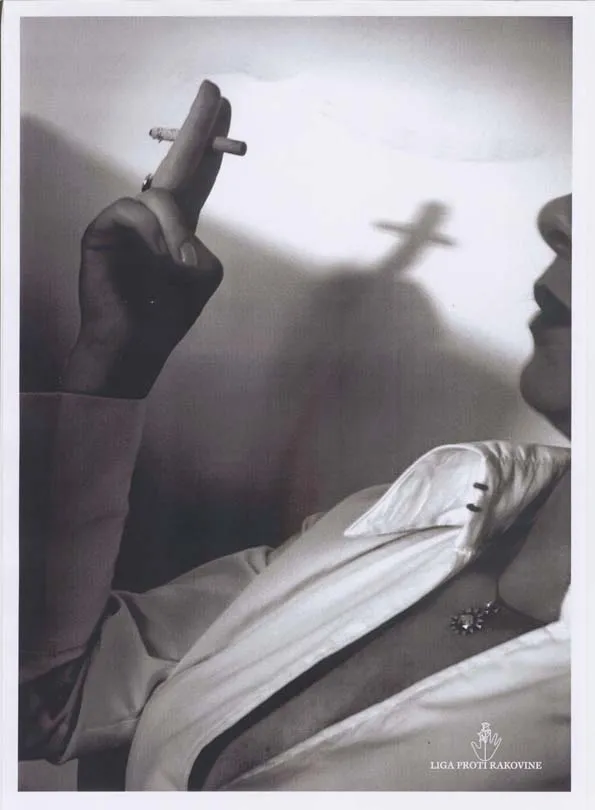

← All Work
League Against Cancer
Who said copywriters can't think visually?

The most favorite of all the print ads I've ever done.
Agency: GREY Slovakia
Year: 2001
Who said copywriters can't think visually?

The most favorite of all the print ads I've ever done.
Agency: GREY Slovakia
Year: 2001